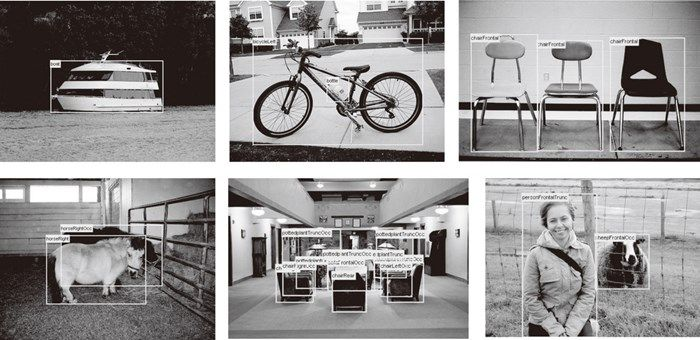
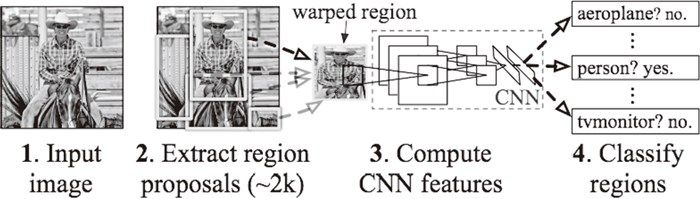
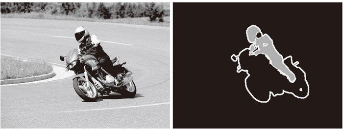
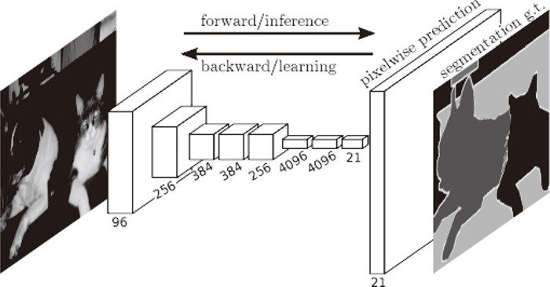
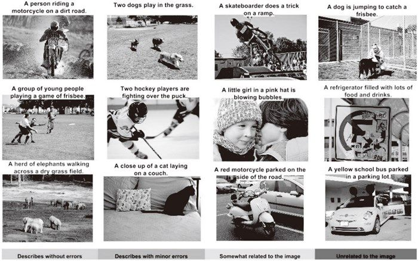
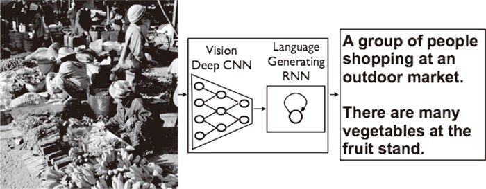

全连接层中，输出和全部的输入相连。使用卷积层也可以实现与此结构完全相同的连接。比如，针对输入大小是 32×10×10（通道数 32、高 10、长 10）的数据的全连接层可以替换成滤波器大小为 32×10×10 的卷积层。如果全连接层的输出节点数是 100，那么在卷积层准备 100 个 32×10×10 的滤波器就可以实现完全相同的处理。像这样，全连接层可以替换成进行相同处理的卷积层。
全连接层中，输出和全部的输入相连。使用卷积层也可以实现与此结构完全相同的连接。比如，针对输入大小是 32×10×10（通道数 32、高 10、长 10）的数据的全连接层可以替换成滤波器大小为 32×10×10 的卷积层。如果全连接层的输出节点数是 100，那么在卷积层准备 100 个 32×10×10 的滤波器就可以实现完全相同的处理。像这样，全连接层可以替换成进行相同处理的卷积层。
前面，作为使用深度学习的例子，我们主要讨论了手写数字识别的图像类别分类问题（称为“物体识别”）。不过，深度学习并不局限于物体识别，还可以应用于各种各样的问题。此外，在图像、语音、自然语言等各个不同的领域，深度学习都展现了优异的性能。本节将以计算机视觉这个领域为中心，介绍几个深度学习能做的事情（应用）。
物体检测是从图像中确定物体的位置，并进行分类的问题。如图 8-17 所示，要从图像中确定物体的种类和物体的位置。

图 8-17 物体检测的例子（引用自文献 [34]）
观察图 8-17 可知，物体检测是比物体识别更难的问题。之前介绍的物体识别是以整个图像为对象的，但是物体检测需要从图像中确定类别的位置，而且还有可能存在多个物体。
对于这样的物体检测问题，人们提出了多个基于 CNN 的方法。这些方法展示了非常优异的性能，并且证明了在物体检测的问题上，深度学习是非常有效的。
在使用 CNN 进行物体检测的方法中，有一个叫作 R-CNN[35] 的有名的方法。图 8-18 显示了 R-CNN 的处理流。

图 8-18 R-CNN 的处理流（引用自文献 [35]）
希望大家注意图中的“2.Extract region proposals”（候选区域的提取）和“3.Compute CNN features”（CNN 特征的计算）的处理部分。这里，首先（以某种方法）找出形似物体的区域，然后对提取出的区域应用 CNN 进行分类。R-CNN 中会将图像变形为正方形，或者在分类时使用 SVM（支持向量机），实际的处理流会稍微复杂一些，不过从宏观上看，也是由刚才的两个处理（候选区域的提取和 CNN 特征的计算）构成的。
在 R-CNN 的前半部分的处理——候选区域的提取（发现形似目标物体的处理）中，可以使用计算机视觉领域积累的各种各样的方法。R-CNN 的论文中使用了一种被称为 Selective Search 的方法，最近还提出了一种基于 CNN 来进行候选区域提取的 Faster R-CNN 方法 [36]。Faster R-CNN 用一个 CNN 来完成所有处理，使得高速处理成为可能。
图像分割是指在像素水平上对图像进行分类。如图 8-19 所示，使用以像素为单位对各个对象分别着色的监督数据进行学习。然后，在推理时，对输入图像的所有像素进行分类。

图 8-19 图像分割的例子（引用自文献 [34]）：左边是输入图像，右边是监督用的带标签图像
之前实现的神经网络是对图像整体进行了分类，要将它落实到像素水平的话，该怎么做呢？
要基于神经网络进行图像分割，最简单的方法是以所有像素为对象，对每个像素执行推理处理。比如，准备一个对某个矩形区域中心的像素进行分类的网络，以所有像素为对象执行推理处理。正如大家能想到的，这样的方法需要按照像素数量进行相应次 forward 处理，因而需要耗费大量的时间（正确地说，卷积运算中会发生重复计算很多区域的无意义的计算）。为了解决这个无意义的计算问题，有人提出了一个名为 FCN（Fully Convolutional Network）[37] 的方法。该方法通过一次 forward 处理，对所有像素进行分类（图 8-20）。
FCN 的字面意思是“全部由卷积层构成的网络”。相对于一般的 CNN 包含全连接层，FCN 将全连接层替换成发挥相同作用的卷积层。在物体识别中使用的网络的全连接层中，中间数据的空间容量被作为排成一列的节点进行处理，而只由卷积层构成的网络中，空间容量可以保持原样直到最后的输出。
如图 8-20 所示，FCN 的特征在于最后导入了扩大空间大小的处理。基于这个处理，变小了的中间数据可以一下子扩大到和输入图像一样的大小。FCN 最后进行的扩大处理是基于双线性插值法的扩大（双线性插值扩大）。FCN 中，这个双线性插值扩大是通过去卷积（逆卷积运算）来实现的（细节请参考 FCN 的论文 [37]）。

图 8-20 FCN 的概略图（引用自文献 [37]）
有一项融合了计算机视觉和自然语言的有趣的研究，该研究如图 8-21 所示，给出一个图像后，会自动生成介绍这个图像的文字（图像的标题）。
给出一个图像后，会像图 8-21 一样自动生成表示该图像内容的文本。比如，左上角的第一幅图像生成了文本“A person riding a motorcycle on a dirt road.”（在没有铺装的道路上骑摩托车的人），而且这个文本只从该图像自动生成。文本的内容和图像确实是一致的。并且，令人惊讶的是，除了“骑摩托车”之外，连“没有铺装的道路”都被正确理解了。

图 8-21 基于深度学习的图像标题生成的例子（引用自文献 [38]）
一个基于深度学习生成图像标题的代表性方法是被称为 NIC（Neural Image Caption）的模型。如图 8-22 所示，NIC 由深层的 CNN 和处理自然语言的 RNN（Recurrent Neural Network）构成。RNN 是呈递归式连接的网络，经常被用于自然语言、时间序列数据等连续性的数据上。

图 8-22 Neural Image Caption（NIC）的整体结构（引用自文献 [38]）
NIC 基于 CNN 从图像中提取特征，并将这个特征传给 RNN。RNN 以 CNN 提取出的特征为初始值，递归地生成文本。这里，我们不深入讨论技术上的细节，不过基本上 NIC 是组合了两个神经网络（CNN 和 RNN）的简单结构。基于 NIC，可以生成惊人的高精度的图像标题。我们将组合图像和自然语言等多种信息进行的处理称为多模态处理。多模态处理是近年来备受关注的一个领域。